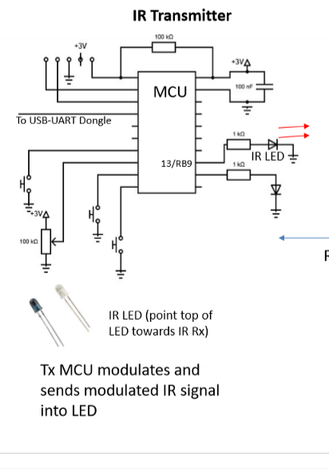

Project Repository
About the Project
A Samsung remote control that is built using a PIC24F16KA101 DIP Microcontroller programmed in C using MPLAB IDE to create an IR transmitter to command any Samsung TV: Power On/Off, Volume Up/Down, Channel Up/Down.
The system integrates a 38 kHz OOK-modulated IR transmitter using an IR LED to replicate encoded Samsung TV remote-control signals, enabling command recognition by the receiver.